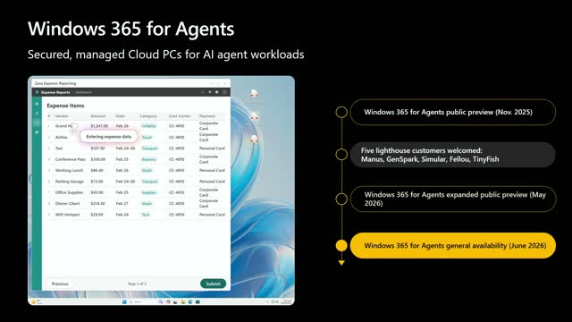
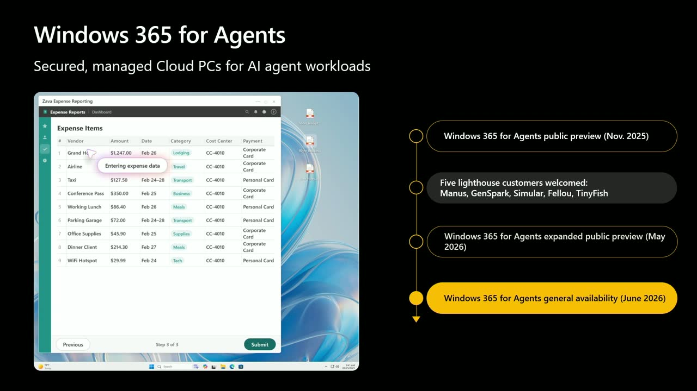
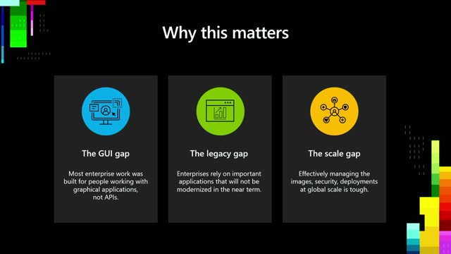
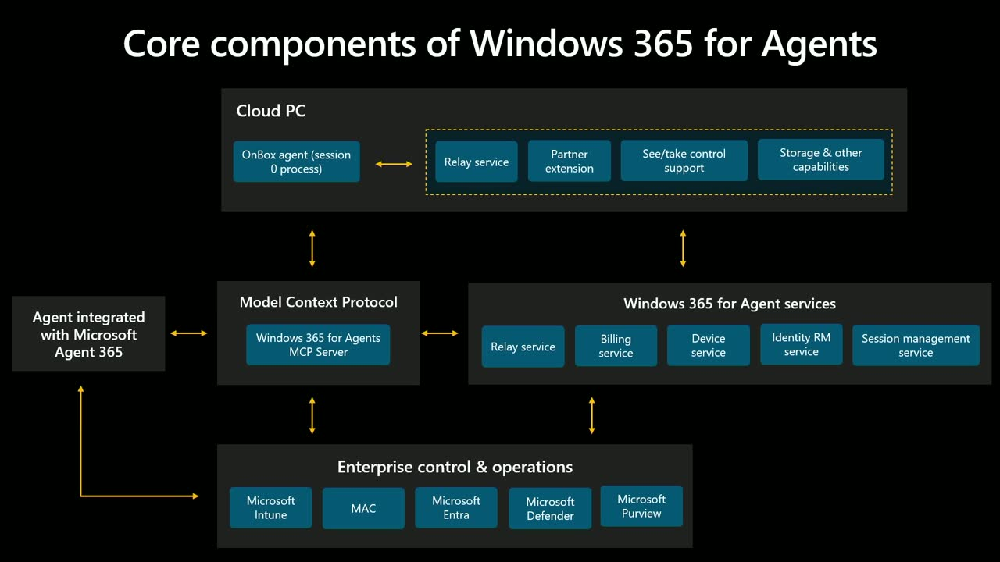
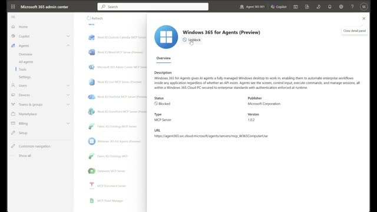
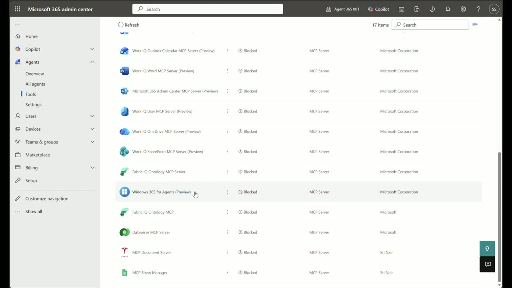
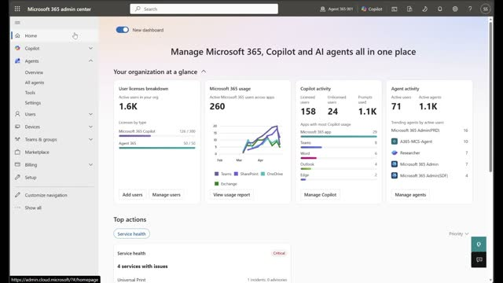
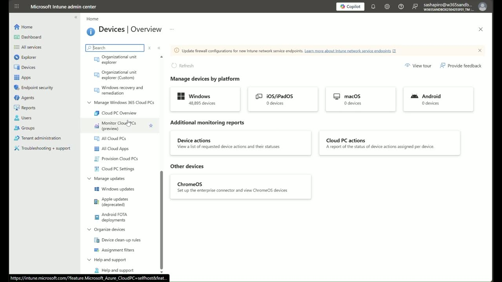

Powering enterprise-grade AI agents with Windows 365 for Agents
Official description
Effective AI agents need GUI automation, legacy apps, or authenticated browser sessions with enterprise-grade security. Windows 365 for Agents meets this challenge by providing Cloud PCs that let AI agents—first or third party—operate inside full and secure computer environments. In this session, we’ll show how to enable agents to complete end-to-end tasks, integrate Windows 365 for Agents with Copilot Studio and custom frameworks, and manage Cloud PCs.
Summary
Overview
Windows 365 for Agents provides AI agents with their own Cloud PCs—full, secure Windows environments—so they can operate GUI applications, legacy software, and authenticated sessions that lie beyond API and MCP boundaries. The session announces general availability, demonstrates a real customer agent from Simular, and walks through building, configuring, governing, and scaling agent Cloud PCs across the Microsoft stack.
Key announcements
- Windows 365 for Agents is generally available (00:01:18

m05sm10s
p05s
p10s) — the platform giving first- and third-party AI agents their own managed Cloud PCs is now GA. - MCP tool layer for Cloud PCs (00:03:08
 m05s
m05s m10s
m10s p05s
p05s p10s) — a set of Model Context Protocol tools lets any MCP-speaking agent framework provision, connect to, interact with, and manage the lifecycle of a Cloud PC.
p10s) — a set of Model Context Protocol tools lets any MCP-speaking agent framework provision, connect to, interact with, and manage the lifecycle of a Cloud PC. - Agent 365 integration (00:03:51m05sm10s

p05sp10s) — the MCP tools, observability, and governance for Windows 365-enabled agents surface inside the Agent 365 portal alongside all other enterprise agents. - Intune provisioning policies for agents (00:13:10

m05s
m10s
p05s
p10s) — a dedicated experience under Devices > Windows 365 Cloud PCs lets admins create agent-specific pools with billing plans, always-available Cloud PCs, and gallery or custom images.
{kind=link}
{kind=link}
{kind=link}
{kind=link}
{kind=link}
{kind=link}
{kind=link}
{kind=link}
{kind=link}
{kind=link}
{kind=link}
{kind=link}
Topics covered
- The GUI gap, legacy gap, and scale gap that block agents from doing real enterprise work.
- Core architecture: agent Cloud PCs, the MCP tool layer, and enterprise control via Intune and Entra agentic identity.
- Simular's "Sai" agent running an overnight insurance claims workflow in a Contoso app with no APIs, including catching and fixing a duplicate-digit zip code error.
- On-demand scaling: spinning Cloud PCs up for large workloads and down to minimize cost.
- Building a sample computer-use agent on Azure OpenAI with the screenshot-reason-act loop.
- Wiring MCP servers into an agent's tooling manifest via the Agent 365 CLI (
list available,add MCP server), including adding mail/Outlook tools. - Local testing in the Agent 365 playground with live tool-call logs.
- Admin blueprint configuration in the Microsoft Admin Center and tenant-wide permissioning.
- Employee self-service: creating agent instances in Teams, registering them in Entra, and assigning provisioning policies.
- A live web-research task: opening Edge to recommend a Windows 365 offering for a 500-person organization across North America and LATAM.
- Windows 365 (the developer offering): ready-to-code Cloud PCs preconfigured with GitHub and developer tools, accessible cross-platform via the Windows App.
Notable quotes
"You need to give your agent a computer. That's what Windows 365 for Agents does." — Joydeep Mukherjee
"Sai sees the screen, moves the mouse, and types on the keyboard, just like a human. It also uses APIs, operates the terminal, and writes code." — Jiachen Yang
"Wiring it up is genuinely a configuration change, not a code rewrite." — Sam Shapiro
Products and tools mentioned
- Windows 365 for Agents
- Windows 365
- Agent 365
- Agent 365 CLI
- Agent 365 playground
- Model Context Protocol (MCP)
- Microsoft Intune
- Microsoft Entra ID
- Microsoft Admin Center
- Azure OpenAI
- GPT-5.4 [inferred]
- Simular / Sai
- Microsoft Teams
- Microsoft Outlook
- Windows App
- GitHub Copilot
- Visual Studio Code
- WinGet
- Docker
- Postman
- Windows 32 (Win32)
Speakers featured
- Joydeep Mukherjee — Principal PM for Windows 365 for Agents, Microsoft
- Sam Shapiro — Senior Product Manager, Microsoft
- Jiachen Yang — Co-founder and CTO, Simular
Follow-up resources
- Windows 365 for Agents documentation (referenced, no URL given).
- Session OD855, "Windows 365 for Developers," hosted by Roop Kiran Chevuri and Phil Gerity [inferred].
Transcript
Show / hide transcript (27,887 chars)
[00:00:01] JOYDEEP MUKHERJEE: Welcome, everyone. [00:00:02] Thank you for joining us at Microsoft Build. [00:00:04] I'm Joydeep Mukherjee. [00:00:05] I'm Principal PM for Windows 365 for Agents. [00:00:09] JIACHEN YANG: I'm Jiachen Yang, [00:00:09] Co-founder and CTO of Simular. [00:00:12] SAM SHAPIRO: And I'm Sam Shapiro, [00:00:13] a Senior Product Manager here at Microsoft. [00:00:16] JOYDEEP MUKHERJEE: Today, we will walk you [00:00:18] through how Windows 365 [00:00:19] for Agents provides enterprise-grade execution [00:00:22] environments for agentic workloads [00:00:24] and highlight a real-world example [00:00:26] from our friends at Simular. [00:00:28] We are going to show you what the platform is, [00:00:31] a real AI agent running on Windows 365 for Agents, [00:00:34] plus how to build and scale with this platform. [00:00:38] We will also touch on how Windows 365 is being designed [00:00:42] and evolved to support modern developers. [00:00:45] Let's start with the platform. [00:00:47] Every AI agent builder hits the same wall. [00:00:50] Your agent can reason. [00:00:51] It can plan. [00:00:52] It can call APIs. [00:00:53] But the moment you need it to actually do work, [00:00:56] open an application, fill out a form, navigate a legacy system, [00:01:00] use any app that exists on Windows, you're stuck. [00:01:03] You need to give your agent a computer. [00:01:06] That's what Windows 365 for Agents does. [00:01:09] It gives your agents their own cloud PCs, [00:01:12] full Windows environments that can see, interact with apps, [00:01:16] and operate the way a real person would. [00:01:18] And today, I'm here to tell you that Windows 365 [00:01:21] for Agents is generally available. [00:01:24] Now, let's look at why this matters. [00:01:28] The problems it solves for agent makers, in other words. [00:01:32] First, the GUI gap. [00:01:34] Most enterprise work was built for people working [00:01:38] with graphical applications, not APIs and MCP servers. [00:01:43] So, a SAS-defined agent hits a roadblock when they try [00:01:46] to interact with these applications. [00:01:48] That is why you need computer-using agents. [00:01:52] Second, the legacy gap. [00:01:55] Enterprises rely on important applications [00:01:58] that will not be modernized in the near term. [00:02:00] These applications sit on Windows 32, [00:02:03] which is why you need computer-using agents [00:02:06] that can have a Windows computer. [00:02:10] Third, the scale gap. [00:02:12] Imagine running up and creating computer environments [00:02:16] for agents at a global scale. [00:02:18] Do you really want to be in that business? [00:02:20] I think not. [00:02:21] You want a scalable solution that can scale across the globe, [00:02:26] provide all the enterprise security and governance. [00:02:30] And that is where Windows 365 for Agents helps you [00:02:34] to bridge all of these gaps. [00:02:37] All right. [00:02:38] Now, let's dig in to understand the core components [00:02:40] of Windows 365 for Agents. [00:02:44] All right. [00:02:44] What is Windows 365 for Agents? [00:02:46] At its core, it's three things. [00:02:48] First, it's cloud PCs built for agents. [00:02:51] These are full Windows environments, [00:02:53] the same Windows 365 Cloud PCs that people use today [00:02:56] but provisioned, connected, and managed for agent use. [00:03:00] Your agent has a desktop, a screen, [00:03:02] all the peripherals it needs, [00:03:04] and can access any application that runs on Windows. [00:03:08] Second, it's an MCP tool layer. [00:03:11] MCP, the Model Context Protocol, which is the open standard [00:03:14] for connecting agents to tools. [00:03:16] We ship a set of MCP tools [00:03:18] that lets your agent provision a cloud PC, connect to it, [00:03:21] interact with it, and manage its lifecycle. [00:03:24] If your agent framework speaks MCP, [00:03:27] it works with Windows 365 for Agents. [00:03:29] Third, it is enterprise control and operations [00:03:33] that you know already. [00:03:34] Cloud PC pools are managed in Intune. [00:03:37] Identity goes through intra-agentic identity. [00:03:40] Policies, compliance, [00:03:41] conditional access, it all just works. [00:03:43] There's nothing new for IT to learn. [00:03:45] They manage agent cloud PCs the same way [00:03:48] that they manage user cloud PCs. [00:03:51] And all of this sits within Agent 365. [00:03:54] The MCP tool is managed within the Agent 365 portal, [00:03:58] and all of the observability and governance [00:04:00] for your Windows 365-enabled agents surface the same way [00:04:04] that they do for any Agent 365-enabled agent. [00:04:07] This makes it easy for your AI admins to configure Windows 365 [00:04:11] for Agents alongside all the other agents [00:04:14] in your enterprise tenant. [00:04:17] All right. [00:04:17] Now that we have an idea of the platform, [00:04:20] let me invite my good friend Jiachen from Simular [00:04:24] to show you a real-world use case. [00:04:26] JIACHEN YANG: Hello, everyone. [00:04:27] I'm Jiachen Yang at Simular. [00:04:29] Our mission is to solve digital autonomy and use it [00:04:32] to improve everyone's lives. [00:04:35] Since becoming a Lighthouse customer in November, [00:04:37] we've partnered with the Windows team to run our AI agent product [00:04:41] on Windows 365 for Agents so they're enterprise ready [00:04:45] with security and IT governance. [00:04:48] Let me introduce you to Sai, [00:04:50] Simular's always-available agentic coworker. [00:04:53] Sai sees the screen, moves the mouse, [00:04:56] and types on the keyboard, just like a human. [00:04:59] It also uses APIs, operates the terminal, and writes code. [00:05:03] This means it works with your existing software [00:05:05] out of the box, including legacy enterprise tools with no APIs, [00:05:10] most of which are running on Windows and Windows only. [00:05:14] That's why Windows 365 for Agents is such a natural fit [00:05:18] since Sai can operate anything that runs on a Windows desktop. [00:05:23] As more people rely on Sai for repeatable and recurring tasks, [00:05:27] we need to scale up and down flexibly. [00:05:29] With Windows 365 for Agents, Sai can spin up cloud PCs on demand, [00:05:35] scale up to maximize performance on large workloads, [00:05:38] and spin them down after finishing the work [00:05:40] to minimize cost. [00:05:43] Additionally, Windows 365 [00:05:45] for Agents gives Sai a secure execution layer, [00:05:48] isolated cloud PCs governed by Entra ID and Intune [00:05:52] so developers can focus on agent logic [00:05:55] and not enterprise requirements. [00:05:58] Let's look at an example. [00:06:01] Here, Sai runs an overnight claims processing workflow [00:06:04] in a Contoso claims app with no APIs. [00:06:08] Users can launch Sai using a single instruction. [00:06:11] Sai opens and reads the scanned handwritten claim form. [00:06:16] It extracts key fields such as claimant, policy, [00:06:19] and estimated damages. [00:06:21] It directly enters it into the application with no API, [00:06:26] just the user interface. [00:06:28] It fills out the policy details such as number, [00:06:31] coverage type, and deductible. [00:06:34] Notice how the zip code has some duplicate numbers. [00:06:38] Sai is able to catch that and fix the data entry error. [00:06:43] It keeps going, selecting "Burst Pipe" from the dropdown menu, [00:06:46] navigating the UI just like a human. [00:06:50] While it's doing this, Sai can alert you [00:06:53] to its current progress and always allow you [00:06:56] to take control when needed. [00:06:59] The claim form is filled, and Sai stands by for the next one. [00:07:03] All this can be done on Windows 365 for Agents. [00:07:06] The bottom line is that Simular and Sai is the brain [00:07:10] for an autonomous computer, and Windows 365 [00:07:13] for Agents provides the secure execution environment. [00:07:17] Now let me hand over to Sam. [00:07:20] SAM SHAPIRO: So that's what's possible. [00:07:21] Real agents, real enterprise workloads running today. [00:07:25] Now let's take a look at the experiences we've built [00:07:27] within the Windows 365 for Agents platform. [00:07:30] I'm going to walk you through how agent builders can integrate [00:07:32] the Windows 365 for Agents MCP server, configure agents [00:07:36] in their enterprise, and then how real employees can interact [00:07:39] with Windows 365 for Agents, enable cloud-using agents. [00:07:44] Let me start out by demonstrating how easy it is [00:07:46] to integrate and test within the Windows 365 [00:07:48] for Agents MCP server. [00:07:51] What you're looking at here is a sample computer use agent built [00:07:54] on Azure OpenAI and powered by a GPT 5.4 model. [00:07:59] The logic for this agent is pretty simple. [00:08:01] It receives a user message, connects to the MCP server [00:08:03] to get its toolkit, provisions and controls a cloud PC session, [00:08:07] and then enters its core loop. [00:08:09] Capture a screenshot, reason over it, take an action, [00:08:12] and repeat until the task is complete. [00:08:15] It's a simple agent, but it's fully integrated with Agent 365 [00:08:18] and Windows 365 for Agents. [00:08:23] The agent is made up of a few key pieces. [00:08:25] The most important one, the computer use orchestrator, [00:08:28] this is where the screenshot action repeat loop lives, [00:08:31] along with a clear prompt [00:08:33] that tells the agent what it's supposed to be doing. [00:08:39] Inside myagent.cs, you'll find all the integration [00:08:42] with Agent 365, the observability tooling, [00:08:45] and the Windows 365 computer use logic. [00:08:47] At runtime, based on the tooling configuration that we specify, [00:08:51] the agent reaches out, discovers what MCP server it has access [00:08:54] to, and based on the model context protocol metadata, [00:08:57] knows how and when to call them. [00:09:09] And this is the tooling manifest. [00:09:11] It's where we declare which MCP server this agent has access to. [00:09:14] Right now, it's empty. [00:09:16] No server is configured, [00:09:17] so the agent can't actually access Windows 365 for Agents. [00:09:21] To see what's available in the tenant, [00:09:22] I'll use the Agent 365 CLI and run list available. [00:09:27] You can see there's a rich set of MCP servers ready to go [00:09:30] out of the box available through Agent 365. [00:09:33] The one we care about today is the Windows 365 computer use [00:09:36] MCP server. [00:09:37] Wiring it up is genuinely a configuration change, [00:09:41] not a code rewrite. [00:09:42] I just run add MCP server through the A365 CLI tool, [00:09:47] and it pulls the MCP server into the manifest [00:09:49] and writes all the configuration the agent needs [00:09:52] to authorize and use it. [00:09:54] And there it is. [00:09:55] The manifest is updated, and this agent now has access [00:09:58] to every tool inside of that MCP server. [00:10:01] While we're here, let's add one more. [00:10:03] How about the mail tools so our agent can access Outlook? [00:10:06] Same command, same experience. [00:10:10] Done. The agent now has a much more powerful toolkit [00:10:13] with almost no effort. [00:10:15] Now let's run it locally [00:10:17] and make sure the MCP server is actually working. [00:10:19] Kicking off, the local build spins [00:10:21] up the agent as a local server. [00:10:29] From there, I can open the Agent 365 playground [00:10:32] and connect directly to the local agent. [00:10:38] You can see I'm now connected to the agent. [00:10:40] It has access to the Windows 365 for Agents MCP server, [00:10:44] and I've got live logs on the right. [00:10:46] This is a really tight development loop. [00:10:48] I can see exactly how the agent is using each tool, [00:10:51] where I can make it more efficient [00:10:52] and optimize in real time. [00:10:54] It's a great environment for iterating [00:10:55] on your agent and your tool calls. [00:10:59] For our first test, I'll ask it to open Notepad [00:11:02] and type a simple phrase. [00:11:03] You can see it step through the flow. [00:11:05] First, it acquires a Windows 365 Cloud PC session, [00:11:08] checking which pools it has access to [00:11:10] and which machines are available to check out right now. [00:11:13] The first-time spin-up takes a few moments. [00:11:16] And there we go. [00:11:17] The session is starting. [00:11:18] We've configured the agent [00:11:19] to generate a screenshot on every step. [00:11:21] So as it passes the commands to the Cloud PC [00:11:24] and performs actions, each one is captured along the way. [00:11:35] Task completed successfully. [00:11:37] Let's look at the screenshots to see what actually happened. [00:11:41] Four screenshots in total. [00:11:43] And in the final screenshot we can see the Cloud PC [00:11:46] with a Notepad window open reading, [00:11:48] this is a demo of a Windows 365. [00:11:50] Exactly what we asked for. [00:11:52] Now let's jump into how agents that are integrated [00:11:55] with Agent 365 and Windows 365 for Agents can be made available [00:11:59] to your entire enterprise tenant. [00:12:03] I'm going to walk you through how an admin configures a [00:12:06] Windows 365 for Agents blueprint in their tenant. [00:12:09] This is Agent 365 inside of the Microsoft Admin Center. [00:12:13] It gives you an overarching view [00:12:15] of every agent in your organization. [00:12:19] If I select a specific blueprint in my tenant, I can see all [00:12:25] of the details of that blueprint. [00:12:27] I can see it has access [00:12:28] to the Windows 365 computer use MCP server, [00:12:31] as well as a few other MCP servers. [00:12:38] Right now, no users are permitted [00:12:39] to create instances of it. [00:12:41] So let me update the permission so that every user [00:12:43] in my tenant can spin up an instance, [00:12:45] effectively giving my entire enterprise access [00:12:47] to Windows 365 for Agents. [00:12:50] I'll also confirm that the server itself is broadly [00:12:53] available by scrolling through the tools list [00:12:55] and finding the Windows 365 [00:12:57] for Agents MCP server available through Agent 365. [00:13:01] Let's update the status here to unblocked. [00:13:05] Now my agent can access Windows 365 for Agents MCP server. [00:13:10] Pool creation and assignment happen in Intune. [00:13:15] Inside of the Intune Admin Center, under "Devices" [00:13:18] in Windows 365 Cloud PCs, there's a dedicated experience [00:13:22] for provisioning cloud PCs specifically for agents. [00:13:27] I'll create a new provisioning policy. [00:13:30] To get started, I'll add a name to my provisioning policy [00:13:33] so that I can identify it [00:13:34] if I have multiple policies created in my tenant. [00:13:36] Next, I add a brief description [00:13:38] to help identify what provisioning policy will be [00:13:40] used for. [00:13:41] I select a billing plan which will be used [00:13:43] for consumption-based charge and then associate a number [00:13:45] of always available cloud PCs. [00:13:52] Next, I add my agents. [00:13:54] This is actually where the agent instances get assigned [00:13:56] to the cloud PC. [00:13:57] I won't add any now, but as agent instances get created [00:14:00] by employees, I'll have the ability to add them [00:14:03] to my existing provisioning policies. [00:14:06] Next, I have an image. [00:14:07] Out of the box, custom images [00:14:09] and gallery images are supported. [00:14:11] Today I'll be using a gallery image. [00:14:14] Finally, I can select a language for this provisioning policy. [00:14:18] Here's all the information associated [00:14:19] with my provisioning policy, and I can create it [00:14:21] by clicking the "Create" button. [00:14:24] Now that we've enabled the agent blueprint in the tenant [00:14:26] and created a provisioning policy, let's take a look [00:14:29] at how enterprise workers can create agent instances, [00:14:31] get them assigned a provisioning policy, and perform real work [00:14:35] with Windows 365 for Agents. [00:14:38] To start, I'm in Teams. [00:14:40] I go to the agent section [00:14:41] where I can see all my agents available [00:14:43] within my enterprise tenant. [00:14:45] I'll search for the agent [00:14:46] that I just configured the blueprint for, [00:14:48] the Build Win365A Blueprint. [00:14:52] I can create agent instances directly with Teams. [00:14:55] I'll add a name, which will be used to identify my agent, [00:14:58] and then I'll add an alias. [00:15:00] This is how the agent will be registered in Entra. [00:15:04] I hit "Create" and now I can see that my agent is [00:15:07] in the process of being created. [00:15:10] During this time, it's creating an agent instance in Entra, [00:15:13] pulling down the blueprint, copying it, [00:15:16] and assigning the right permissions that it needs [00:15:18] to do meaningful work right away. [00:15:23] And there's my agent ready to go. [00:15:25] I can now chat directly with it. [00:15:27] Before I can run computer-using workflows, I need to take [00:15:30] that agent and give it access [00:15:31] to a provisioning policy that I created. [00:15:33] So now let's imagine I'm an IT admin asked [00:15:36] to provide Cloud PC access to a newly created agent. [00:15:39] I navigate to provisioning policies for agents. [00:15:41] I find the policy that I want to assign this agent to. [00:15:46] Here I can see all of the agents that already have access [00:15:48] to this Cloud PC pool. [00:15:50] I'll add my newly created agent by clicking "Add Agent." [00:15:55] I see a list of all the agents in my tenant [00:15:57] and I select the relevant agent instance. [00:16:00] I confirm the assignment, update the policy, [00:16:03] and I see a success message indicating [00:16:05] that the agent now has access to the Cloud PC pool. [00:16:10] So now that the agent has access, [00:16:12] let's run a real workflow. [00:16:14] I'll start with something simple. [00:16:16] I ask the agent to open Notepad and type "This is a build demo." [00:16:19] It's a basic task but a great way [00:16:21] to demonstrate how a computer-using agent can check [00:16:23] out a Cloud PC, open applications, [00:16:25] and perform real work by typing and interacting with the system. [00:16:29] The agent connects to the Cloud PC, starts a session, [00:16:33] and provides a folder where screenshots will be stored. [00:16:36] The task completes successfully. [00:16:38] Let's take a look at what it did. [00:16:40] In the first step, we see [00:16:41] that it successfully checked out a Cloud PC. [00:16:44] Next, it opened Notepad and finally it typed [00:16:47] "This is a build demo" exactly as requested, [00:16:50] interacting with the UI just like a human would. [00:16:53] Now let's try something more advanced. [00:16:55] I'll ask the agent to open Edge, [00:16:57] find the Windows 365 product page, [00:16:59] and determine the best offering [00:17:00] for a 500-person remote organization [00:17:02] across North America and LATAM. [00:17:05] This is something a person normally would have [00:17:07] to research manually across multiple pages. [00:17:10] Let's see if the agent can do it. [00:17:12] The agent starts working, connects to a Cloud PC, [00:17:14] and processes the request. [00:17:17] And there's the answer, a clear explanation and a reason why, [00:17:21] based on information that it gathered [00:17:22] from the website directly. [00:17:24] Let's break down what happened. [00:17:26] First, it opened Edge, then searched [00:17:28] for the Windows 365 product page. [00:17:30] It waited for the page to load, [00:17:32] navigated to the relevant sections, [00:17:34] and moved into the Enterprise and Pricing views. [00:17:36] From there it analyzed the content, compared options, [00:17:39] and pulled together the information needed [00:17:41] to generate a clear, well-reasoned recommendation, [00:17:43] tailored to the scenario I gave it. [00:17:46] This just scratches the surface of what's possible [00:17:49] with Windows 365 for Agents. [00:17:51] It enables agents to take on complex, multi-step tasks [00:17:55] across real applications and the web, turning what used [00:17:58] to be manual work into automated end-to-end outcomes. [00:18:03] So let's bring it all together. [00:18:04] Three things to take away. [00:18:06] One, stay focused on agent logic. [00:18:09] Windows 365 for Agent handles the execution environment [00:18:12] underneath, so your time goes [00:18:14] into what makes your agent valuable. [00:18:16] Two, extend the reach of your agent past the API boundary. [00:18:20] A lot of enterprise work still happens in that line [00:18:23] of business application that falls outside [00:18:25] of the modernization efforts. [00:18:27] With a cloud PC, your agent can operate them [00:18:30] in the current state. [00:18:31] Three, build on the one streamlined Microsoft stack, [00:18:35] from MCP server to Agent 365 to Intune and Entra. [00:18:39] Build, publish, govern, [00:18:41] and scale on your tools your organization already trusts. [00:18:45] That's Windows 365 for Agents. [00:18:47] Back to you, Joydeep. [00:18:48] JOYDEEP MUKHERJEE: All right, so we looked [00:18:49] at Windows 365 for Agents. [00:18:51] That is just one offering. [00:18:52] Now, let me walk you through Windows 365, [00:18:56] a different offering, and how it helps developers work [00:18:59] with less friction. [00:19:02] As you all know, as developers, [00:19:03] you guys face new challenges now. [00:19:05] Fifty percent or more developer time is spent on maintenance, [00:19:09] complex configuration, and operational tasks rather [00:19:13] than writing new code. [00:19:14] The story is familiar, right? [00:19:15] You sit down to write code, and then you've got [00:19:17] to manage your environment, do a bunch of configurations, [00:19:21] and this takes cycles away from what you need [00:19:23] to be doing, coding and shipping. [00:19:25] Seventy-five percent or more developers need secure, [00:19:29] virtualized environments during development. [00:19:33] Forty percent or more of you work across platforms like Mac [00:19:38] and Windows and Linux and other stuff. [00:19:41] So these are the exact challenges [00:19:44] for which we designed Windows 365. [00:19:51] Microsoft is uniquely positioned to bring the PC [00:19:54] and the cloud together, [00:19:55] and Windows 365 delivers those benefits directly [00:19:59] to modern development. [00:20:00] It provides a cloud development environment [00:20:03] with a ready-to-code Windows Cloud PC preconfigured [00:20:07] with GitHub and preferred developer tools, [00:20:09] helping teams get productive faster [00:20:11] and reduce environment friction. [00:20:14] Now, just as Office 365 brought productivity to the cloud, [00:20:17] Windows 365 brings Windows to the cloud. [00:20:20] For you, this means that the right environment is right there [00:20:24] at your fingertips for each task. [00:20:26] You can assign one or multiple cloud PCs, [00:20:29] each set up for specific workloads, whether for coding, [00:20:32] testing, or AI development. [00:20:35] With Windows App, you can access your cloud PCs from any device [00:20:38] and switch seamlessly between your local desktop [00:20:41] and cloud environment using familiar gestures and shortcuts. [00:20:46] Windows 365 streams a full Windows experience. [00:20:49] This is very important. [00:20:50] Apps, data, settings, everything from the Microsoft Cloud [00:20:54] to any device, giving you consistent, secured access [00:20:57] without being constrained by local hardware or config issues. [00:21:02] With Windows 365, you can focus less on managing environments, [00:21:06] more on coding and shipping. [00:21:08] Let me now walk you through what Windows 365 can do [00:21:12] for developers. [00:21:13] Development today isn't tied to one machine. [00:21:15] You can switch between devices all day, [00:21:17] and every switch comes with friction. [00:21:18] So we start on my personal Mac device, [00:21:20] but I'm connecting straight into my development cloud PC [00:21:24] through the Windows App. [00:21:26] You see I have two there. [00:21:27] I'm choosing today to go [00:21:28] into the 16-core cloud PC for development. [00:21:31] You see that it's setting it up, configuring it, [00:21:34] and it will shortly connect to my cloud PC. [00:21:37] Now, once I'm inside, look at what is already on there. [00:21:41] GitHub Copilot, Visual Studio Code, [00:21:43] everything is ready for me to go. [00:21:46] Now, today, my project also requires WinGet, Docker, [00:21:51] Postman, and a bunch of other stuff. [00:21:53] And you see there the cloud PC automatically puts everything [00:21:57] on there. [00:21:58] I don't have to spend my cycles there. [00:22:00] It's all ready. [00:22:01] I log in, and then I am ready to begin coding. [00:22:07] Thank you, everyone, for joining us today. [00:22:09] Before we wrap, we'd love for you [00:22:10] to continue your journey with us. [00:22:12] If you're interested in running AI Agents on Windows 365 [00:22:16] for Agents, check out our documentation. [00:22:18] For a deep dive into the Windows 365 for Developers offering, [00:22:22] watch session OD855, hosted [00:22:25] by Roop Kiran Chevuri and Phil Gerity. [00:22:29] Thanks again.